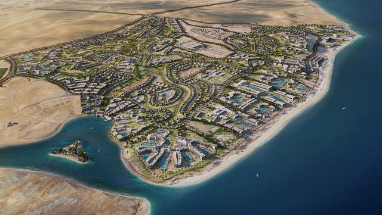

Urban design and master planning
Planning Red Sea destinations.
PUD Consultants has planned Red Sea destinations in Egypt and Saudi Arabia: Port Ghalib and Abo Dabbab at Marsa Alam, Hurghada, Ain El Sokhna, the Green Star Hotels initiative and the sub-regional plan for Yanbu, Umluj, Al Wajh and Duba.

Port Ghalib Master PlanMarsa Alam · 20252009Abo Dabbab Marine Field StationMarsa Alam · 20092009Green Star Hotels InitiativeEgypt · 2009 Yanbu, Umluj, Al Wajh and Duba Sub-Regional Plan (YUWDDA)Yanbu, Umluj, Al Wajh and Duba (Red Sea coast) · 2025
Yanbu, Umluj, Al Wajh and Duba Sub-Regional Plan (YUWDDA)Yanbu, Umluj, Al Wajh and Duba (Red Sea coast) · 2025 Ain El Sokhna Tourist CentreAin El Sokhna, Gulf of Suez · 19981994Hurghada Apartments Hotel and Shopping MallHurghada · 1994
Ain El Sokhna Tourist CentreAin El Sokhna, Gulf of Suez · 19981994Hurghada Apartments Hotel and Shopping MallHurghada · 1994 Pyramisa Apartment Hotel and Shopping Mall, HurghadaHurghada · 20032011Castle Zaman HotelTaba-Nuweiba coast, South Sinai · 2011
Pyramisa Apartment Hotel and Shopping Mall, HurghadaHurghada · 20032011Castle Zaman HotelTaba-Nuweiba coast, South Sinai · 2011Questions people ask
Does PUD plan Red Sea destinations?
Yes. PUD has worked on Port Ghalib and the Abo Dabbab marine field station at Marsa Alam, Hurghada, Ain El Sokhna and the Red Sea sub-regional plan for Yanbu, Umluj, Al Wajh and Duba in Saudi Arabia, and on the Green Star Hotels initiative with GIZ.